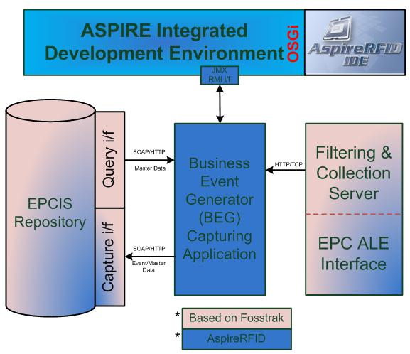
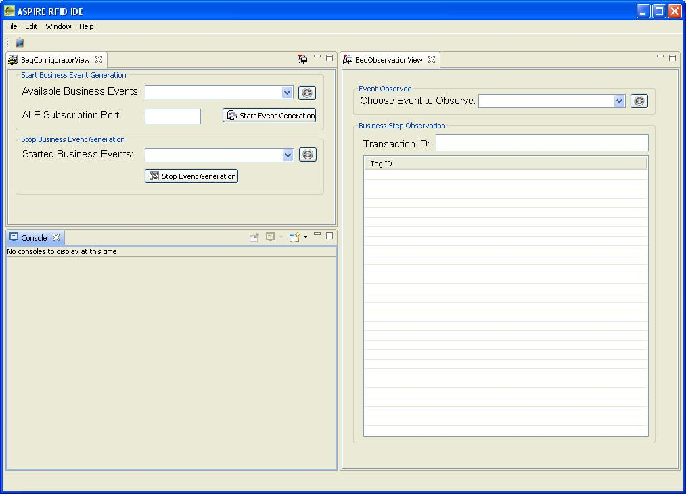

Business Event Generator
Theory
Notion of Programmable Filters in the ASPIRE Architecture
Because ASPIRE is designed in such a way that it will be expandable, configurable and modular, the use of Programmable filters arises as a natural feature. Moreover ASPIRE IDE (Integrated Development Environment) will include a programmability engine that will be able to process a fully fledged RFID solution described in a special purpose domain specific language. This language will be specified as part of future deliverables of WP4 in the ASPIRE project.
As mentioned in Section 3, the reusable filters and their proposed filtering markup language (FML) need a “core” engine that interprets its semantics and that executes the rules, policies or commands given in their parameter data fields. In the AspireRFID middleware, this core “engine” consists of three different components of the architecture (see also Figure 2 in section 2.2 to see the overall ASPIRE architecture):
- The filtering and Collection (F&C) module, which is responsible of the low level filtering. We recall that low level filtering simply deals with getting rid of duplicated tag readings.
- The Business Event Generator (BEG) module, which is responsible for the High Level filtering providing Business context to the captured events.
- And the Information sharing (IS) repository, which is the repository which stores a company’s Master Data and Business functions.
Figure 5 demonstrates a complete Aspire programmable filter solution with ASPIRE’s existing tools. With the help of a Master Data editor (explained in detail in subsection 8.3) we can “describe” the company’s business data, processes and the required Low Level input to create business events. Note that the Master Data Editor (top left corner of Figure 3) is under the scope of the ASPIRE IDE. Also shown in Figure 3 is an example of Master Data parameter values: ecreport_names, event_name, business_step, business_location, ecspecname, read_point and transaction_type. All these data are stored in the Information Sharing repository (bottom left of Figure 3, tagged EPCIS repository) which is used from the Business Event Generator on demand to configure its behavior on creating the business events. Note in Figure 3 that the BEG is interconnected to the EPCIS via two interfaces, one for capture and another for query. The query interface is the one used by the BEG module to request Master Data on demand from the EPCIS. With the help of ECSpec editor (top right of Figure 3) we can create the required ECSpecs that configure the Filtering and Collections layer behavior by using the ECSpec configurator (also called ALE server configurator in Figure 3). Also note that in Figure 3, the box tagged as Defined ECspec contains a code in XML format. The Filtering and Collection module (low right part of Figure 3) after being configured as required collects the raw readings from the attached RFID readers to it and produces the filtered ECReports which are fed back to the Business Event Generator. Event data is the reported back from the BEG to the EPCIS repository via the capture interface (see again bottom left part of Figure 3). A complete detailed example is described in Section 9.
Figure 5 Complete Programmable Filters ASPIRE solution
Business Event Generation: Connecting F&C and Information Services modules through Business Filters
Since the programmable filters described in this document are related to specific components of the ASPIRE architecture, it is useful then before proceeding to more technical specifications to understand, in simple words, their aim and how they interact with each other.
The Information Services module specification defines a data language for representing visibility information, namely events having four dimensions of “what”, “when”, “where” and “why”.
Primarily, the Filtering and Collection module answers ‘What’, ‘Where’ and ‘When’. Information Services module adds the ‘Why’ (i.e., the business context). For example, the ‘Where’ in Filtering and Collection module usually means a logical reader name (e.g. reader X). This is later converted into a business location in the Information Services module (e.g. Warehouse X).
Furthermore, the Filtering and Collection module interface is exclusively oriented towards real-time processing of Information Services data, with no persistent storage of these data required by the interface. Business applications (e.g. ERP, WMS, etc.) that manipulate Information Services module data, in contrast, typically deal explicitly with historical data and hence are inherently persistent in nature. More details of the F&C server can be found in deliverable D3.3 [25]
Architecturally, the Filtering and Collection layer is first concerned with the mechanics of data gathering, and then with filtering down such data to meaningful events that are a suitable starting point for interpretation by business logic. Business layers, where the Information Services module comes into play, are concerned with business process and recording events that can serve as the basis for a wide variety of enterprise-level information processing tasks.
Visibility information at the Information Services module level is often used to record what took place in an operational business process that involves the handling of physical assets, such as receiving goods through an entry door of a warehouse. The module responsible for supervising such a process and generating Information Services data is the Business Event Generation module.
The “glue” for the two modules described above, i.e. the information Service and the Filtering and collection modules, and the one that collects the produced F&C data and adds the “why” notion is the Business Event Generator module. To the extent that the Business Event Generation module interacts with EPC data and/or RFID tags in the course of carrying out its function, it uses ALE as the way to read those EPC data and/or RFID tags and the Information Sharing to store these “events”.
In most of the cases the Business Event Generation module is also responsible for a complex orchestration of RFID devices, material handling equipment, and human tasks that are involved in carrying out a business process. That is why Filtering and Collection is used specifically to interact with the RFID devices, and therefore it addresses a reduced scope. [4]
Connecting F&C and Information Services modules through Business Filters (the different components)
Overview
To create programmable filters that contain a complete business logic throughout the ASPIRE’s middleware we need to combine three different specifications together. These specifications apply to three different modules of the ASPIRE middleware architecture (for details of the architecture see deliverable D2.3b [21] and the introductory section of this document) which are:
- the Filtering and collection module,
- the Business Event generation module and
- the Information Services repository module.
So to analyze the combination of the specifications of those three modules first we need to study the components that are used from each one separately and then specify the way in which they interact.
Filtering and Collection module
Role
The filtering and collection module (F&C) carries out processing to reduce the volume of EPC data, transforming raw tag reads into streams of events more suitable for application logic than raw tag reads. From the practical point of view, the F&C module interacts with upper layer clients that are subscribed to its services by defining report cycles and report data formats. These report data formats define the type of data to be exchanged, while the cycles define the way in which these data will be exchanged or retrieved and how often. The main specifications that define these procedures are the ECSpecs, and within it, the ECReportSpec. These are briefly described in the following subsections.
ECSpecs
An ECSpec is a complex type that describes an event cycle and one or more reports that are to be generated from it. Current tags or tags that have been added or deleted can be retrieved with respect to the last event cycle or combinations of all. [3]
An ECSpec Contains (see Figure 6):
- An unordered list of Logical Readers called “logicalReaders” whose reader cycles are to be included in the event cycle and are used to acquire tags.
- A specification of how the boundaries of event cycles are to be determined called “boundarySpec”. In brief, it specifies the starting and stopping conditions for event cycles.
- An unordered list of Report Specifications, each describing a report to be generated from this event cycle and to be included in the output from each event cycle called “reportSpecs”.
For defining filters the most important part of an ECSpec is the ECReportSpec.
ECReportSpecAn ECReportSpec specifies one report to be included in the list of reports that results from executing an event cycle. An ECSpec contains a list of one or more ECReportSpec instances. When an event cycle is completed, an ECReports instance is generated, unless suppressed. An ECReports instance contains one or more ECReport instances, each corresponding to an ECReportSpec instance in the ECSpec that governed the event cycle (see Figure 6). The ECReportSetSpec is an enumerated type denoting what set of Tags is to be considered for filtering and output: all Tags read in the current event cycle, additions from the previous event cycle, or deletions from the previous event cycle (see Figure 6).
An ECReportSetSpec contains one or more ECFilterSpec which specifies the Tags to be included in the final report. The ECFilterSpec implements a flexible filtering scheme based on two pattern lists. Each list contains zero or more URI (Universal Resource Identifier)-formatted EPC patterns. Each EPC pattern denotes a single EPC, a range of EPCs, or some other set of EPCs.
An EPC is included in the final report if
- the EPC does not match any pattern in the excludePatterns list, and
- the EPC does match at least one pattern in the includePatterns list.
The (b) test is omitted if the includePatterns list is empty. [3]
Figure 6 ECSpecs and related fields
Information Services module
Role
The ASPIRE Information Sharing repository is responsible for receiving application-agnostic RFID data from the filtering & collection middleware through the Business Event Generation (BEG) application and store the translated RFID data in corresponding business events. These events carry the business context as well (e.g., they refer to particular companies, business locations, business processes etc.). Moreover it makes business events and master data available and accessible to other upstream applications through the query interface.
Generally, the ASPIRE information sharing repository is dealing with two kinds of data:
- RFID event data i.e. data arising in the course of carrying out business processes. These data change very frequently, at the time scales where business processes are carried out.
- Master/company data, i.e. additional data that provide the necessary context for interpreting the event data. These are data associated with the company, its business locations, its read points, as well as with the business steps comprising the business processes that this company carries out.
At a glance Information Services of the ASPIRE Information Sharing middleware consists of three parts: a capture interface that provides web services for storing data, a repository that provides persistence, and query interface that provides web services that retrieves the business events/master data from the repository.
Event Data
Event data arises in the course of carrying out business processes. Event data grows in quantity as more business is transacted, and refers to things that happen at specific moments in time.
EPCIS EventAn EPCISEvent is a generic base class for all event types which provides date and time fields (see strings “eventTime” and “recordTime” in Figure 7). Below is given the EPCISEvent’s XML schema [2][6] and the different events are described in the following subsections (see also Figure 8 for a schematic representation of the different types of events.)
<xsd:complexType name="EPCISEventType" abstract="true">
<xsd:sequence>
<xsd:element name="eventTime" type="xsd:dateTime" />
<xsd:element name="recordTime" type="xsd:dateTime" minOccurs="0" />
…
</xsd:sequence>
<xsd:anyAttribute processContents=”lax” />
</xsd:complextype>
EPCISEvent’s XML schema
Figure 8 EPCIS Events
Aggregation EventAn AggregationEvent describes events related to objects that have been physically aggregated. In such an event, there is a set of contained objects that have been aggregated within a containing entity which identifies the physical aggregation itself. The contained objects are called children and the containing entity is called parent.
Because an AggregationEvent indicates aggregations among physical objects, the children are identified by EPCs. However, the parent entity is identified by an arbitrary URI (which may or may not be an EPC) because the parent is not necessarily a physical object that is separate from the aggregation itself. Below is given the AggregationEvent’s XML schema. [2][6]
<xsd:complexType name="AggregationEventType">
<xsd:complexContent>
<xsd:extension base="epcis:EPCISEventType">
<xsd:sequence>
<xsd:element name="parentID" type="epcis:ParentIDType"
minOccurs="0" />
<xsd:element name="childEPCs" type="epcis:EPCListType" />
<xsd:element name="action" type="epcis:ActionType" />
<xsd:element name="bizStep" type="epcis:BusinessStepIDType"
minOccurs="0" />
<xsd:element name="disposition" type="epcis:DispositionIDType"
minOccurs="0" />
<xsd:element name="readPoint" type="epcis:ReadPointType"
minOccurs="0" />
<xsd:element name="bizLocation" type="epcis:BusinessLocationType"
minOccurs="0" />
<xsd:element name="bizTransactionList" type="epcis:BusinessTransactionListType"
minOccurs="0" />
…
</xsd:sequence>
<xsd:anyAttribute processContents="lax" />
</xsd:extension>
</xsd:complexContent>
</xsd:complexType>
AggregationEvent’s XML schema
Object EventAn ObjectEvent captures information about an event pertaining to one or more physical objects identified by EPCs.
Logically, an ObjectEvent pertains to a single object identified by an EPC. However, you can specify more than one EPC in an epcList when the remaining ObjectEvent data applies to all the EPCs in the list.
In an ObjectEvent, no relationship among the EPCs is implied by their appearance in the same ObjectEvent other than the coincidence of them all being captured with identical information. By contrast, an AggregationEvent or TransactionEvent conveys an implicit association among the EPCs in the event. Below is given the ObjectEvent’s XML schema. [2][6]
<xsd:complexType name="ObjectEventType">
<xsd:complexContent>
<xsd:extension base="epcis:EPCISEventType">
<xsd:sequence>
<xsd:element name="epcList" type="epcis:EPCListType" />
<xsd:element name="action" type="epcis:ActionType" />
<xsd:element name="bizStep" type="epcis:BusinessStepIDType"
minOccurs="0" />
<xsd:element name="disposition" type="epcis:DispositionIDType"
minOccurs="0" />
<xsd:element name="readPoint" type="epcis:ReadPointType"
minOccurs="0" />
<xsd:element name="bizLocation" type="epcis:BusinessLocationType"
minOccurs="0" />
<xsd:element name="bizTransactionList" type="epcis:BusinessTransactionListType"
minOccurs="0" />
…
</xsd:sequence>
<xsd:anyAttribute processContents="lax" />
</xsd:extension>
</xsd:complexContent>
</xsd:complexType>
ObjectEvent’s XML schema
Quantity EventA QuantityEvent is an event that happens to a specified number of objects all having the same type, but where the individual instances are not identified. Quantity Events can serve as a bridge between RFID systems and legacy inventory systems that do not identify individual items. Below is given the QuantityEvent’s XML schema. [2][6]
<xsd:complexType name="QuantityEventType">
<xsd:complexContent>
<xsd:extension base="epcis:EPCISEventType">
<xsd:sequence>
<xsd:element name="epcClass" type="epcis:EPCClassType" />
<xsd:element name="quantity" type="xsd:int" />
<xsd:element name="bizStep" type="epcis:BusinessStepIDType"
minOccurs="0" />
<xsd:element name="disposition" type="epcis:DispositionIDType"
minOccurs="0" />
<xsd:element name="readPoint" type="epcis:ReadPointType"
minOccurs="0" />
<xsd:element name="bizLocation" type="epcis:BusinessLocationType"
minOccurs="0" />
<xsd:element minOccurs="0" name="bizTransactionList"
type="epcis:BusinessTransactionListType" />
…
</xsd:sequence>
<xsd:anyAttribute processContents="lax" />
</xsd:extension>
</xsd:complexContent>
</xsd:complexType>
QuantityEvent’s XML schema
Transaction EventA TransactionEvent describes the association or disassociation of physical objects to a business transaction. While other event types have an optional bizTransactionList field that can be used to provide context for an event, the TransactionEvent is used to declare in an unequivocal way that certain EPCs have been associated or disassociated with one or more business transactions as part of the event. Below is given the TransactionEvent’s XML schema. [2][6]
<xsd:complexType name="TransactionEventType">
<xsd:complexContent>
<xsd:extension base="epcis:EPCISEventType">
<xsd:sequence>
<xsd:element name="bizTransactionList" type="epcis:BusinessTransactionListType" />
<xsd:element name="parentID" type="epcis:ParentIDType"
minOccurs="0" />
<xsd:element name="epcList" type="epcis:EPCListType" />
<xsd:element name="action" type="epcis:ActionType" />
<xsd:element name="bizStep" type="epcis:BusinessStepIDType"
minOccurs="0" />
<xsd:element name="disposition" type="epcis:DispositionIDType"
minOccurs="0" />
<xsd:element name="readPoint" type="epcis:ReadPointType"
minOccurs="0" />
<xsd:element name="bizLocation" type="epcis:BusinessLocationType"
minOccurs="0" />
…
</xsd:sequence>
<xsd:anyAttribute processContents="lax" />
</xsd:extension>
</xsd:complexContent>
</xsd:complexType>
TransactionEvent’s XML schema
Actions Types
The Action type says how an event relates to the lifecycle of the entity being described. The Action type has three possible values (see Figure 13):
- Add which means that the entity in question has been created or added to.
- Observe which means that the entity in question has neither been changed, nor has it been created, added to, destroyed or removed from.
- Delete which means that the entity in question has been removed from or destroyed altogether.
Figure 13 Action types
Master Data
Master data is additional data that provides the necessary context for interpreting event data. It is available for filtering a query through the EPCIS Query Interface, and available as part of a report through the Reporting Service.
Master data does not grow merely because more business is transacted. It is not typically tied to specific moments in time and provides interpretation for elements of event data.
Master data is business-context information that is associated with event data by the Business Event Generation module reporting service and by the data exchange service.
Master Data TypesA master data type is a definition for master data entries of that type. Each master data type defines a set of attributes and their data types.
A master data entry is a concrete instance of a master data type. You can create as many entries as you need of each master data type. Each entry has the same set of attributes defined for its master data type, but where the master data type defines the data type for each attribute an entry’s attributes contain the real business-context information associated with a business’s operations. [2][6]
The available master data types are (see also figure below):
- bizLocation
- bizStep
- bizTransactionList
- bizTransaction which is composed of
- Business Transaction and
- Business Transaction Type
- disposition
- epcClass
- readPoint
Figure 14 Master Data types
The master data type that mostly concerns us to define the required programmable filter is the “BusinessTransaction” type which is next analyzed.
BusinessTransactionA BusinessTransaction field identifies a particular business transaction. Transaction information may be included in EPCIS events to record an event’s participation in particular business transactions. [6]
A business transaction is described in Information Services module by a structured type consisting of the following pair of identifiers:
- BusinessTransactionTypeID
- BusinessTransactionID
BusinessTransactionID is a vocabulary whose elements denote specific business transactions. In Table 1 below the BusinessTransactionID’s attributes are shown. The attribute that are most significant to create an EPCIS event are:
- The “ECReportNames” one which stores a list of the incoming ECReport names, to the Business Event Generator module, which concerns the event to be created.
- The “EventType” which denotes the type of the event (Aggregation Event, Object Event, Quantity Event or Transaction Event)
- And the “Action” which denotes how an event relates to the lifecycle of the entity being described.
| Attribute Name | Attribute URI |
|---|
| ECReportNames | urn:epcglobal:epcis:mda:ecreport_names |
| EventName | urn:epcglobal:epcis:mda:event_name |
| EventType | urn:epcglobal:epcis:mda:event_type |
| BusinessStep | urn:epcglobal:epcis:mda:business_step |
| BusinessLocation | urn:epcglobal:epcis:mda:business_location |
| Disposition | urn:epcglobal:epcis:mda:disposition |
| ReadPoint | urn:epcglobal:epcis:mda:read_point |
| TransactionType | urn:epcglobal:epcis:mda:transaction_type |
| Action | urn:epcglobal:epcis:mda:action |
Table 1 Business Transaction ID Attributes
Business Event Generation module
The architecture introduces a Business Event Generator (BEG) module between the F&C and Information Sharing (e.g., EPC-IS) modules as shown in Figure 15. The role of the BEG is to automate the mapping between reports stemming from F&C and IS events. The Business event generation module associates business-context information (Master Data) with event data. The data is stored in the Information Service module repository.
Role
BEG module recognizes the occurrence of EPC-related business events, and delivers these as EPCIS data. It may coordinate multiple sources of data in the course of recognizing an individual EPCIS event. Sources of data include filtered, collected EPC data obtained through the Filtering & Collection Interface.
Functionality
In order for BEG to create the business events it needs the appropriate information from the repository. Hence, the EPCIS standard defines all the information that the EPCIS events encapsulate. This data necessary for the proper population of the EPCIS events are retrieved from the EPCIS repository, and more specifically the data defined at the BusinessTransaction’s Attributes, using the query interface. This predefined information is entered and managed using the master data editor as shown in Figure 15 below (this process is indicated by the top arrow entering the EPCIS repository and indicates the definition of the elementary business processes). With the use of the MDE editor (paragraph 8.3) the end-user organizations can properly populate the vocabularies so as make the event generation possible. The MDE operates over the EPCIS layer also and could be considered an implementation of an accessing application according to the EPC Network Architecture terminology.
 Figure 15 Role of the BEG Configurator and MDE tools
Figure 15 Role of the BEG Configurator and MDE tools
As already outlined BEG is a capturing application: BEG stores the data in the EPCIS repository as event data in an automated fashion, thereby adding business context to RFID readings in order to transform them to the target business semantics as required by the particular business case associated with an overall RFID deployment. In order to create business context, BEG relies on a description of the target business processes, which should be described in the EPCIS Master Data. Each process is defined and described based on the composition of a discrete series of business steps. According to the EPCIS specification, each business step can be modeled by one EPCIS event of the specification. In particular, each business process has an identifier in the Business Transaction Vocabulary and is associated with a number of events. Each event is characterized as shown in Table 1 above by the type of the event, the event’s action, the business location that the event takes place, the event’s business step, the captured items disposition, the read point which the action took place and finally the required report names.
The attributes mentioned above constitute all of the information required in order to properly create an EPCIS event. Recall that based on such master data type, BEG is able to transform EC Reports from ALE into EPCIS events that can be stored in the EPCIS repository. Hence, each described event is associated with a list of Report names. The reports described in a specific ECSpec define all the required details about the Event Cycle and what kind of ECReports are to be delivered to the BEG. The BEG should be previously configured according to what specific report names is expecting from the F&C module which are defined in the business transaction vocabulary of the corresponding event[18].
In the context of Figure 15 the configuration process of the BEG module is indicated by two steps: first an arrow that goes from the EPCIS module to the editor and indicates the retrieval of the necessary information to configure the BEG, and second another arrow that goes from the editor to the BEG module and indicates the uploading of the configuration files to the BEG. Finally, real time capturing of events is displayed in the editor by obtaining real time information from the BEG and the BEG generates event data that are stored in the EPCIS module.
Connecting F&C and Information Services modules through Business Filters (creating business logic)
Overview
While RFID readers detect and report tags along with a timestamp, it is not trivial to identify and populate properly business events based solely on a set of low-level RFID readings (i.e. tag streams). For example, there is a need to distinguish the identity of a containing entity from identities of the contained objects in the case of aggregations (e.g., a pallet carrying tagged objects that is in the range of an RFID reader). Most important, a business transaction as defined in the master data must be correlated with a specific transaction as is “monitored” by other applications. To address these needs we segment EPCs in classes. As an organization is assigned (from EPCglobal) and manages a pool of EPCs, it is possible to segment them into categories and reserve some of these categories for specific usage. Hence, a class of EPCs could be reserved for aggregating entities (e.g. pallets or boxes). The classification can then be used to populate the aggregation event. Another class may be reserved to denote a general category for all physical objects under detection, whereas another class can be used to signify documents that accompany business transactions (e.g., invoices). Also, a naming convention for the pattern of the report name is used. Specifically the implementation of BEG, understands a report name that starts with the string “bizTransactionIDs” as the name of the report carrying the EPC of the documents accompanying a process. Likewise, a report name starting with “parentObjects” is expected to carry the parent aggregating entity, while a report name starting with “transactionItems” is expected to carry the EPCs of the tagged items, etc. In the case only of quantity events, which do not have an EPC list and only the quantity of items affected by the event is of interest, this report is expected to contain the EPC class along with the number of items of the class.[18]
So as previously explained the "glue” from the three modules described in Section 6 to create business logic at the AspireRFID middleware is the BEG module, which uses the predefined data provided from the two others to produce the required EventData. Below the “event generation” notion is analyzed in more details and the relationship between the three middleware modules required for that will become clearer.
Combining ECSpecs & BizTransaction Attr to create Event Data
To create Event Data, some event fields are required and some are optional. Table 2 maps these associations. In addition, later on we are going to describe how we should set up our middleware to get these event fields and create the desired Event Data.
| | ObjectEvent | AggregationEvent | QuantityEvent | TransactionEvent |
|---|
| Action | R | R | | R |
| bizLocation | O | O | O | O |
| bizStep | O | O | O | O |
| bizTransactionList | O | O | O | R |
| childEPCs | | R | | |
| Disposition | O | O | | O |
| epcClass | | | R |
| epcList | R | | | R |
| eventTime | R | R | R | R |
| parented | | R | | O |
| Quantity | | | R |
| readPoint | O | O | O | O |
R = Required O = Optional
Table 2 Event fields with Event Types mapping [2]
The sequence for creating the various Business Events shown in Figure 16 at the ASPIRE middleware is the following. The Filtering and Collection module receives the raw readings from the Logical Readers attached to it. The F&C module, in turn, processes the received readings taking in consideration the already predefined ECSpecs and delivers the produced ECReport to the Business Event Generation module. The Event Generation module receives the ECReport produced by the F&C module and processes them taking in consideration the BusinessTransaction attributes data from the already predefined Master Data of the company. Finally the Business Event Generation module sends to the Information Services module Capturing interface the produced event data where they are stored in a repository and are available for other applications, in our case the Connector application, to query through its Query Interface.

Figure 16 Creating Event data Sequence
Creating an Aggregation Event
To create an Aggregation Event the Business Event Generation module should receive an ECReport from the Filtering and Collection module comprised from three reports named:
- “bizTransactionIDs@*”
- “transactionItems@*”
- And “parentObjects@*”
Where (*) the BusinessTransaction vocabulary URI.
Setting up the ECSpecAt the “bizTransactionIDs” report a filter should be set up in such a way that the F&C module would report, every time they are captured, only patterns of the included transaction ID Classes. An example of such a ReportSpec for the “urn:epc:pat:gid-96:145.12.*” class is shown below.
<reportSpec reportOnlyOnChange="false" reportName="bizTransactionIDs@urn:epcglobal:fmcg:bte:xxxxxxxxx"
reportIfEmpty="true">
<reportSet set="CURRENT" />
<filterSpec>
<includePatterns>
<includePattern>
urn:epc:pat:gid-96:145.12.*
</includePattern>
</includePatterns>
<excludePatterns />
</filterSpec>
<groupSpec />
<output includeTag="true" includeRawHex="true"
includeRawDecimal="true" includeEPC="true" includeCount="true" />
</reportSpec>
Example of a ReportSpec for the “urn:epc:pat:gid-96:145.12.*” class
At the “transactionItems” report a filter should be set up in a way that the F&C module would report, only the first time they are captured, only ID’s belonging in the selected patterns of the included items Classes. An example of such a ReportSpec for the “urn:epc:pat:gid-96:145.233.*” class is shown below.
<reportSpec reportOnlyOnChange="false" reportName="transactionItems@urn:epcglobal:fmcg:bte:xxxxxxxxx"
reportIfEmpty="true">
<reportSet set="ADDITIONS" />
<filterSpec>
<includePatterns>
<includePattern>
urn:epc:pat:gid-96:145.233.*
</includePattern>
</includePatterns>
<excludePatterns />
</filterSpec>
<groupSpec />
<output includeTag="true" includeRawHex="true"
includeRawDecimal="true" includeEPC="true" includeCount="true" />
</reportSpec>
An example of ReportSpec for the “urn:epc:pat:gid-96:145.233.*” class
At the “parentObjects” report a filter should be set up in a way that the F&C module would report, every time they are captured, only patterns of the included parent Objects Classes. An example of such a ReportSpec for the “urn:epc:pat:gid-96:145.56.*” class is shown below.
<reportSpec reportOnlyOnChange="false" reportName="parentObjects@urn:epcglobal:fmcg:bte:xxxxxxxxx"
reportIfEmpty="true">
<reportSet set="CURRENT" />
<filterSpec>
<includePatterns>
<includePattern>
urn:epc:pat:gid-96:145.56.*
</includePattern>
</includePatterns>
<excludePatterns />
</filterSpec>
<groupSpec>
<pattern>
urn:epc:pat:gid-96:145.56.*
</pattern>
</groupSpec>
<output includeTag="true" includeRawHex="true"
includeRawDecimal="true" includeEPC="true" includeCount="true" />
</reportSpec>
Example of a ReportSpec for the “urn:epc:pat:gid-96:145.56.*” class
Processing the ECReportAs soon as the report is received from the Business Event Generator module it is first checked whether a “bizTransactionID” is included or not. If it has then the specific one is used. If it has not then the last received one is used. Every “transactionItem” and “parentObject” is received and from now on it is bind with the specific “bizTransactionID”.
After this it is checked if a “parentObject” is reported. If it has been reported, then it is used as the “parentObject” for every “transactionItem” received from now on. If it hasn’t then the last received “parentObject” is used.
Finally, it is checked whether any “transactionItems” are reported. If they have then these “transactionItems” get as “parentObject” and “bizTransactionID” the last reported.
The rest of the information required to build the Aggregation Event is taken from the BusinessTransaction’s attributes stored at the Information Services module repository.
Creating an Object Event
To create an Object Event the Business Event Generation module should receive an ECReport from the Filtering and Collection module comprised from two reports named:
- “bizTransactionIDs@*”
- And “transactionItems@*”
Where (*) the BusinessTransaction vocabulary URI.
Setting up the ECSpecAt the “bizTransactionIDs” report a filter should be set up in a way that the F&C module would report, every time they are captured, only patterns of the included transaction ID Classes. An example of such a ReportSpec for the “urn:epc:pat:gid-96:145.12.*” class is shown below.
<reportSpec reportOnlyOnChange="false" reportName="bizTransactionIDs@urn:epcglobal:fmcg:bte:xxxxxxxxx"
reportIfEmpty="true">
<reportSet set="CURRENT" />
<filterSpec>
<includePatterns>
<includePattern>
urn:epc:pat:gid-96:145.12.*
</includePattern>
</includePatterns>
<excludePatterns />
</filterSpec>
<groupSpec />
<output includeTag="true" includeRawHex="true"
includeRawDecimal="true" includeEPC="true" includeCount="true" />
</reportSpec>
Example of a ReportSpec for the “urn:epc:pat:gid-96:145.12.*”
At the “transactionItems” report a filter should be set up in a way that the F&C module would report, only the first time they are captured, only ID’s belonging in the selected patterns of the included items Classes. An example of such a ReportSpec for the “urn:epc:pat:gid-96:145.233.*” class is shown below.
<reportSpec reportOnlyOnChange="false" reportName="transactionItems@urn:epcglobal:fmcg:bte:xxxxxxxxx"
reportIfEmpty="true">
<reportSet set="ADDITIONS" />
<filterSpec>
<includePatterns>
<includePattern>
urn:epc:pat:gid-96:145.233.*
</includePattern>
</includePatterns>
<excludePatterns />
</filterSpec>
<groupSpec />
<output includeTag="true" includeRawHex="true"
includeRawDecimal="true" includeEPC="true" includeCount="true" />
</reportSpec>
Example of a ReportSpec for the “urn:epc:pat:gid-96:145.233.*”class
As soon as the report is received from the Business Event Generator module it is first checked whether a “bizTransactionID” has been included or not. If the specific one has been found then it is used, otherwise the last one received is used. Every “transactionItem” received from now on is bind with the specific “bizTransactionID”.
Finally, BEG checks whether any “transactionItems” are reported. If so, these “transactionItems” get as “bizTransactionID” the last reported.
The rest of the information required to build the Object Event is taken from the BusinessTransaction’s attributes stored at the Information Services module repository.
Creating a Quantity Event
To create a Quantity Event the Business Event Generation module should receive an ECReport from the Filtering and Collection module comprised from two reports named:
- “bizTransactionIDs@*”
- And “transactionItems@*”
Where (*) the BusinessTransaction vocabulary URI.
Setting up the ECSpecAt the “bizTransactionIDs” report a filter should be set up in a way that the F&C module would report, every time they are captured, only patterns of the included transaction ID Classes. An example of such a ReportSpec for the “urn:epc:pat:gid-96:145.12.*” class is shown below.
<reportSpec reportOnlyOnChange="false" reportName="bizTransactionIDs@urn:epcglobal:fmcg:bte:xxxxxxxxx"
reportIfEmpty="true">
<reportSet set="CURRENT" />
<filterSpec>
<includePatterns>
<includePattern>
urn:epc:pat:gid-96:145.12.*
</includePattern>
</includePatterns>
<excludePatterns />
</filterSpec>
<groupSpec />
<output includeTag="true" includeRawHex="true"
includeRawDecimal="true" includeEPC="true" includeCount="true" />
</reportSpec>
Example of a ReportSpec for the “urn:epc:pat:gid-96:145.12.*” class
At the “transactionItems” report a filter should be set up in a way that the F&C module would report, only the first time they are captured, the count of the included patterns and in which Class they belong to. An example of such a ReportSpec for the “urn:epc:pat:gid-96:145.233.*” class is shown below.
<reportSpec reportOnlyOnChange="false" reportName="transactionItems@urn:epcglobal:fmcg:bte:xxxxxxxxx"
reportIfEmpty="true">
<reportSet set="ADDITIONS" />
<filterSpec>
<includePatterns>
<includePattern>
urn:epc:pat:gid-96:145.233.*
</includePattern>
</includePatterns>
<excludePatterns />
</filterSpec>
<groupSpec>
<pattern>
urn:epc:pat:gid-96:145.233.*
</pattern>
</groupSpec>
<output includeTag="false" includeRawHex="false"
includeRawDecimal="false" includeEPC="false" includeCount="true" />
</reportSpec>
Example of a ReportSpec for the “urn:epc:pat:gid-96:145.233.*” class
Processing the ECReportAs soon as the report is received from the Business Event Generator module it is first checked whether a “bizTransactionID” has been included or not. If it has been included then the specific one is used, otherwise the last one received is used. Every “transactionItem” received from now on is bind to the specific “bizTransactionID”.
Finally BEG checks whether any “transactionItems” are reported. If so, the count of these items and their Class get as “bizTransactionID” the last reported.
The rest of the information required to build the Quantity Event is taken from the BusinessTransaction’s attributes stored at the Information Services module repository.
Creating an Transaction Event
To create Transaction Event the Business Event Generation module should receive an ECReport from the Filtering and Collection module comprised from three reports named:
- “bizTransactionParentIDs@*”
- “bizTransactionIDs@*”
- And “transactionItems@*”
Where (*) the BusinessTransaction vocabulary URI.
Setting up the ECSpecAt the “bizTransactionParentIDs” report a filter should be set up in a way that the F&C module would report, every time they are captured, only patterns of the included transaction ID Classes. An example of such a ReportSpec for the “urn:epc:pat:gid-96:145.19.*” class is shown below.
<reportSpec reportOnlyOnChange="false"
reportName="bizTransactionParentIDs@urn:epcglobal:fmcg:bte:xxxxxxxxx" reportIfEmpty="true">
<reportSet set="CURRENT" />
<filterSpec>
<includePatterns>
<includePattern>
urn:epc:pat:gid-96:145.19.*
</includePattern>
</includePatterns>
<excludePatterns />
</filterSpec>
<groupSpec />
<output includeTag="true" includeRawHex="true"
includeRawDecimal="true" includeEPC="true" includeCount="true" />
</reportSpec>
Figure 24 Example of a ReportSpec for the “urn:epc:pat:gid-96:145.19.*” class
At the “bizTransactionIDs” report a filter should be set up in a way that the F&C module would report, only the first time they are captured, only patterns of the included transaction ID Classes. An example of such a ReportSpec for the “urn:epc:pat:gid-96:145.12.*” class is shown below.
<reportSpec reportOnlyOnChange="false" reportName="bizTransactionIDs@urn:epcglobal:fmcg:bte:xxxxxxxxx"
reportIfEmpty="true">
<reportSet set="ADDITIONS" />
<filterSpec>
<includePatterns>
<includePattern>
urn:epc:pat:gid-96:145.12.*
</includePattern>
</includePatterns>
<excludePatterns />
</filterSpec>
<groupSpec />
<output includeTag="true" includeRawHex="true"
includeRawDecimal="true" includeEPC="true" includeCount="true" />
</reportSpec>
Example of a ReportSpec for the “urn:epc:pat:gid-96:145.12.*” class
At the “transactionItems” report a filter should be set up in a way that the F&C module would report, only the first time they are captured, only ID’s belonging in the selected patterns of the included items Classes. An example of such a ReportSpec for the “urn:epc:pat:gid-96:145.233.*” class is shown below.
<reportSpec reportOnlyOnChange="false" reportName="transactionItems@urn:epcglobal:fmcg:bte:xxxxxxxxx"
reportIfEmpty="true">
<reportSet set="ADDITIONS" />
<filterSpec>
<includePatterns>
<includePattern>
urn:epc:pat:gid-96:145.233.*
</includePattern>
</includePatterns>
<excludePatterns />
</filterSpec>
<groupSpec />
<output includeTag="true" includeRawHex="true"
includeRawDecimal="true" includeEPC="true" includeCount="true" />
</reportSpec>
Example of a ReportSpec for the “urn:epc:pat:gid-96:145.233.*” class
Processing the ECReportAs soon as the report is received from the Business Event Generator module, it is first checked whether a “bizTransactionParentID” has been included or not. If it has been included then the specific one is used. If it hasn’t then the last one received is used. Every “bizTransactionID” and “transactionItem” received from now on are bind with the specific “bizTransactionParentID”.
Finally, it is checked whether any “bizTransactionIDs” and/or “transactionItems” are reported. If they are these “bizTransactionIDs” and/or “transactionItems” get as “bizTransactionParentID” the last reported.
The rest of the information required to build the Transaction Event is taken from the BusinessTransaction’s attributes stored at the Information Services module repository.
Users Guide
Requirements
Hardware (minimum)
- P IV 1.2GHz or equivalent
- 512 MB Ram
- 50 MB free HD space
Software
Deployment
In order to set up your own BEG Engine; follow the step-by-step tutorial outlined below:
Make sure you have an Apache Tomcat servlet container (version 6.0 or higher) running. It will be used to deploy and run the BEG Engine web application.
Download the latest aspireRfidBEG distribution found at the ASPIRE's
Forge and place the WAR file contained in the archive in your Tomcat's webapps directory. After restarting Tomcat, the WAR file will be deployed.
Configuration example
The objective of this tool is to provide a control client to configure Business Event Generator (BEG) so as to translate ECReports to specific EPCIS Events by taking in consideration the already defined Master Data. Moreover, it provides a view which is able to show the real time processed readings for each event served at that time. A screenshot of the BEG plugin is presented in Figure below.

BEG plugin screenshot
In order to configure the BEG plugin, the following need to be defined:
- EPCIS Repository Capture Endpoint: Where the connections for the Capturing Interface are being accepted.
- EPCIS Repository Query Endpoint: Where the connections for the Query interface are being accepted.
- Event/Port Binding: Predefine event/port bindings.
- Observations Refresh Rate: Specify how often the observation server will update its view.
These can be defined through Window -> Preferences -> BEG in the ASPIRE IDE (
BusinessEventGeneratorPlug-in).
Developers Guide
Interfaces to other components
The BEG component interface provides five methods for interaction with the BEG client which are all communicating with the BEG client by exchanging SOAP messages.
- The first method is the getEpcListForEvent (EventStatus getEpcListForEvent(String eventID)) which is used for returning to the BEG client an EventStatus object which contains the real time list of EPC ids and the transaction ID of a chosen Event (String eventID) from the list of events that the BEG component is already serving. So with the help of this method one can observe at real time the incoming IDs as they are reported to the BEG by the F&C component and are related with a specific transaction Event.
- The second method is the stopBegForEvent (boolean stopBegForEvent(String eventID)) which is used by the BEG client to stop serving a predefined Event by sending to it its specific EventID.
- The third method is the getStartedEvents (List getStartedEvents()) which returns a list of Event IDs that the BEG component is serving.
- The fourth method is the startBegForEvent (boolean startBegForEvent(VocabularyElementType vocabularyElementType, String repositoryCaptureURL, String begListeningPort)) which is used to set up the BEG component for start serving a specific Event. More specifically this method takes the already pre described Elementary Business Transaction Event described at the Information Sharing repository’s Master Data and uses it for configuring the Business Event Generator to create Business Events from the ECReports received from the port given as variable to the startBegForEvent method. If the method is successful it will return true otherwise it will return false.
- Finally, the fifth method is the getEventList (List getEventList( String repositoryQueryURL)) which is used for returning a list of all the available defined Events from a Company’s EPCIS Master Data repository.
Implementation details
Technically, the BEG component is packed as a .war file which is deployed on top of an Apache Tomcat 6.0 container (or higher) and uses Java version 1.6 (and higher).
In order to implement the Web Services required for its configuration and management, the frameworks JaxWS and CXF/Spring were used.
For capturing the produced ECReports from the Filtering and Collection layer it provides a TCP/HTTP interface that is configured by defining different capturing port for each Elementary Business Transaction’s defined report ID.
It uses Fosstrak’s Event Data Capture client implementation which follows the EPCIS 1.1 Capture interface which uses the JaxWS framework and CXF/Spring technologies for implementing the required Web Services and the “construction” of the SOAP messages.
It uses Fosstrak’s Master Data Query client implementation which follows the EPCIS 1.1 query interface which uses the JaxWS framework and CXF/Spring technologies for implementing the required Web Services and the “construction” of the SOAP messages
And finally the Event Types that the Business Event Generation component supports are the standard Event types defined in the EPCIS 1.1 Specifications which are:
- Quantity Events,
- Aggregation Events,
- Transaction Events and
- Object Events
References and Bibliography
- Matthias Lampe, Christian Floerkemeier, “High-Level System Support for Automatic-Identification Applications”, In: Wolfgang Maass, Detlef Schoder, Florian Stahl, Kai Fischbach (Eds.): Proceedings of Workshop on Design of Smart Products, pp. 55-64, Furtwangen, Germany, March 2007.
- BEA WebLogic. Understanding the Event, Master Data, and Data Exchange Services. BEA WebLogic RFID Entersprise Server. [Online] October 12, 2006. http://e-docs.bea.com/rfid/enterprise_server/docs20/pdf.html.
- EPCglobal, “The Application Level Events (ALE) Specification, Version 1.1”, February. 2008, available at: http://www.epcglobalinc.org/standards/ale
- EPCglobal Inc™. Frequently Asked Questions - ALE 1.1. EPCglobal. [Online] http://www.epcglobalinc.org/standards/ale.
- FossTrak Project. FossTrak Project. [Online] http://www.fosstrak.org/index.html.
- EPC Information Services (EPCIS) Specification, Version 1.0.1, September 21, 2007 available at: http://www.epcglobalinc.org/standards/epcis/
- EPCglobal Inc™. The EPCglobal Architecture Framework Version 1.2. [Online] September 10, 2007. http://www.epcglobalinc.org/standards/architecture/.
- Application Level Events 1.1(ALE 1.1) Overview, Filtering & Collection WG, EPCglobal, March 5, 2008 , available at: http://www.epcglobalinc.org/standards/ale
- C.Floerkemeier, C. Roduner, and M. Lampe, RFID Application Development With the Accada Middleware Platform, IEEE Systems Journal, Vol. 1, No. 2, December 2007.
- C. Floerkemeier and S. Sarma, “An Overview of RFID System Interfaces and Reader Protocols”, 2008 IEEE International Conference on RFID, The Venetian, Las Vegas, Nevada, USA, April 16-17, 2008.
- Russell Scherwin and Jake Freivald, Reusable Adapters: The Foundation of Service-Oriented Architecture, 2005.
- Panos Dimitropoulos and John Soldatos, ‘RFID-enabled Fully Automated Warehouse Management: Adding the Business Context’, submitted to the International Journal of Manufacturing Technology and Management (IJMTM), Special Issue on: "AIT-driven Manufacturing and Management".
- Architecture Review Committee, “The EPCglobal Architecture Framework,” EPCglobal, July 2005, available at: http://www.epcglobalinc.org.
- Achilleas Anagnostopoulos, John Soldatos and Sotiris G. Michalakos, ‘REFiLL: A Lightweight Programmable Middleware Platform for Cost Effective RFID Application Development’, accepted for publication to the Journal of Pervasive and Mobile Computing (Elsevier).
- Benita M. Beamon, “Supply chain design and analysis: Models and methods”, International Journal of Production Economics, Vol. 55 pp. 281-294, 1998
- Zhekun Li, Rajit Gadh, and B. S. Prabhu, "Applications of RFID Technology and Smart Parts in Manufacturing", Proceedings of DETC04: ASME 2004 Design Engineering Technical Conferences and Computers and Information in Engineering Conference September 28-October 2, 2004, Salt Lake City, Utah USA.
- John Soldatos, Nikos Kefalakis, Nektarios Leontiadis, et. al., “Core ASPIRE Middleware Infrastructure”, ASPIRE Project Public Deliverable D3.4a, Jun 2009, publicly available at: http://wiki.aspire.ow2.org/xwiki/bin/view/Main.Documentation/Deliverables
- Efstathios Mertikas, Nikos Kefalakis and John Soldatos, “Managing Master Data and Business Events in an RFID Network”, Submitted to the Pervasive and Mobile Computing Journal (Elsevier), September 2009
- Jeremy Landt, The history of RFID, IEEE Potentials, October-November 2005.
- Ron Weinstein, RFID: A Technical Overview and Its application to the enterprise. IT Pro, published by the IT Computer Society.
- ASPIRE D2.3b. Architecture specifications for the innovation management framework, 2009.
- ASPIRE D2.2 (End-User) SME Requirements (IT infrastructure, traceability, Anti-counterfeiting, privacy)
- ASPIRE D2.1 Review on methods and tools for concurrent innovation engineering - Review of State-of-the-Art Middleware, Methods, Tools and Techniques
- ASPIRE, Advanced Sensors and lightweight Programmable middleware for Innovative Rfid Enterprise applications, Annex I Description of work.
- ASPIRE D3.3 Data Collection, Filtering and Application Level Events
- ASPIRE D4.3a Programmable filters (FML) specification. Interim version
 PDF
PDF History
History


{kind=link}
{kind=link}